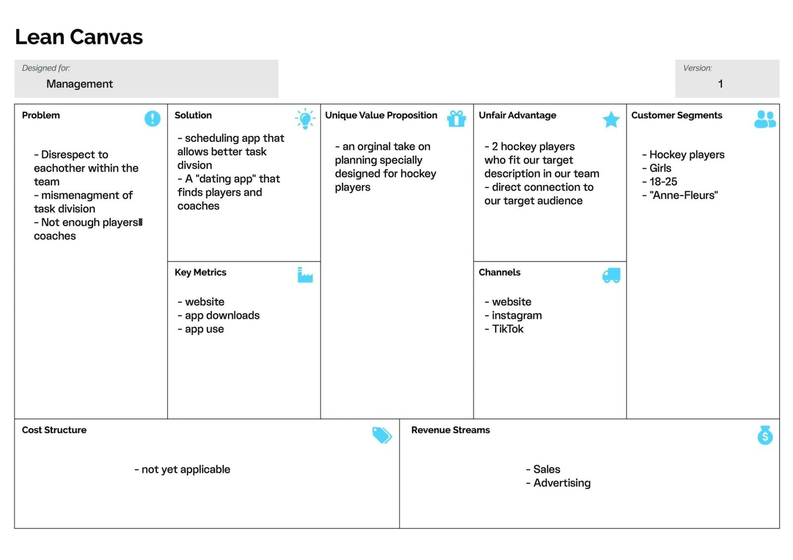
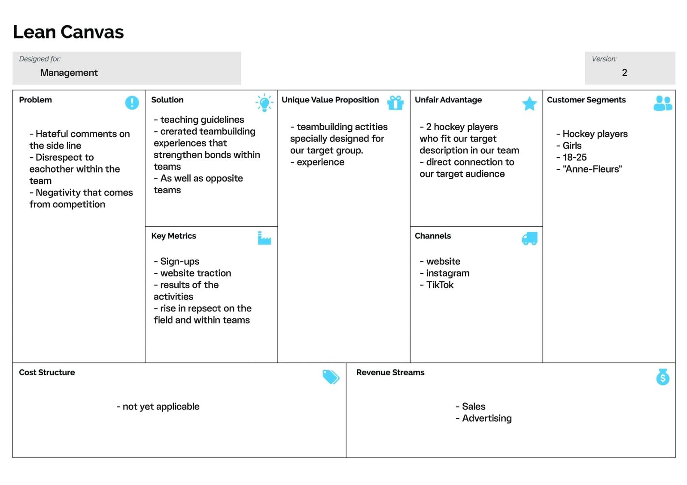
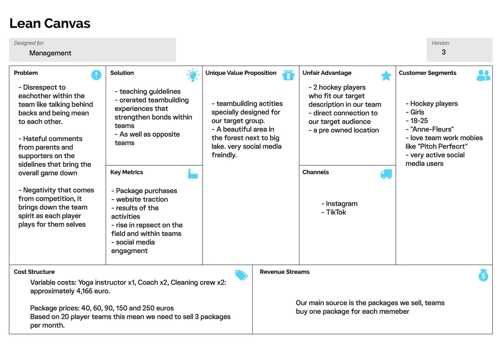

General Information
This branded website is publicly available at buas-media-interactive.github.io/my-website (please change text and hyperlink destination)
This website was created by… (only students listed below will be graded!)
- Isa de Goede (ID: 225523)
- Tamar Sopacua (ID: 222893)
- Anne Thijs (ID: 221157)
- Sasha de Quaasteniet (ID: 224311)
Content
Please clarify here the match between students and pieces of content. Make sure that you provide a link to the correct page within the website
| # | Student ID | Value | Name and link of content |
|---|---|---|---|
| 1. | 225523 | Values | Values |
| 2. | 222893 | Vision & Mission | Vision & Mission |
| 3. | 221157 | About us & Our Amazing Team | About us & Our Amazing Team |
| 4. | 224311 | What we offer | What we Offer |
Persona
Floor Elisabeth Verhaegen

Age: 21
Gender: Female
Nationality: Dutch
Location: Tilburg, the Netherlands
Status: Situationship
Personality: Outgoing, Social, Sportive, ambitious
Weakness: Perfectionism, acting on changes in her life
Frustrations:
- Not being honest
- Balance between her life in Tilburg and Vught
- Insecure about the future, since everything seems to be planned out by everyone. She wants to travel, but also want to do a traineeship after graduating, but maybe also do a master. All these choices make her feeling lost sometimes.
motivations: Wealth for the future (a good job, nice car, beautiful house), Kindness and successful career in a corporate environment.
Brands:
- Adidas
- My Jewellery
- Apple
- Zara
Preffered channels:
- TikTok
Bio:
Floor Verhaegen is 21 years old and currently lives with 3 friends in a student house in Tilburg, where she studies communication and information sciences at the Tilburg University in Tilburg. She grew up in a family with 3 children, she is the youngest of three sisters. Her parents are still together and still live together in the parental home in Vught with their labrodoodle Bobby. Besides her studies, Floor works at Buutvrij, a creative coffee café in the heart of Tilburg. She is also still twice a week on the field hockey field in Vugt, where she is still a loyal member. She plays field hockey in a friends team. Among her friends, she is known as a sociable person, a listening ear and a creative person. She has an eye for detail, both in her studies and in her private life. She likes to be involved in styling and makes sure that every dinner party at her house is perfectly organized. She someone who regularly gifts herself a new piece of clothing, because she finds it important to look well-groomed. She gets inspiration for new outfits from Instagram and Tiktok. So besides loving her regular things, like her regular field hockey club, that she still visits her parents weekly, she is also someone who loves harmony. Harmony within the family, between her friends and also definitely in her field hockey team. She does not like injustice, not in the world and not her team. She is an everyman's friend and would like everyone to be nice to each other and not talk behind each other's backs. Despite having a rich social life both in Tilburg with her studies and her old friends in Vught, she finds it difficult to find a balance in it sometimes. To sometimes find herself in three places at once and give everyone equal attention. As much as she would like not to care what her friends think, it does keep her busy.
Production
Design Elements
The list of design elements alongside their justifications:
-
Our colour pallet
-
#F6AFCA
The choice for the light pink as primary color refers to the female part of our target group. Pinks stands for passion, tenderness, and cute. Our target group has a passion for the sport they play, and by using this pink we aim to create a passioned environment. Thereby, stands the pink for tenderness. We want to inspire people to be kind to each other, so that there will be less negativity and more positivity. And don’t forget the looks, because they are everything to our target group. With, especially the light pink, we want to create a cute logo and add the cuteness to the website so that in the end we have created a cute, tender and passionate environment for our target audience.
-
#496AFE
The choice for the bright blue as secondary color refers to the color of the hockey fields. It also stands for harmony, security, and truthfulness. With Stick Together we want to create harmony within the team, and give them a secure atmosphere. Although we are all for positivity we don’t want people to pretend, we want truthfulness. Especially since our target group is very fond of honesty. All this together is the reason to choose this color for our pallet.
-
#0D9277
The choice for the green color as secondary color refers also to the color of the hockey fields. Green stands for experienced, trusted, and healing. This perfectly connects with the message we as Stick Together want to convey. We offer experiences to learn to trust your team and celebrate victories and loses together. Green also refers to nature, since our target audience plays field hockey which is outside. Additionally, the activities we offer will be held outside in a green area.
-
#EE4C39
The choice for the bright red/ orange as a primary color refers to battle we want to overcome with Stick Together. The color stands for judge and selfish. These negative emotion are mentioned by our target group as a stumbling block in the team. We want to connect people together and make them less selfish and teach them to not immediately judge people. That is why we use this color in combination with the pink to find a perfect balance. Since the goal in the end is to have a well balanced team who work together and connect.
-
#EDE8E8
The choice for the beige as a secondary color refers to the rest and the balance. Thereby, we have looked at the brands which our target group like a lot, such as Marie Claire, Linda Meiden, and My Jewellery. All these brand use a neutral colors combined with bright colors. So to follow the trend and to appeal to our target group we chose this color pallet.
-
#F6AFCA
- Font choices
- User interface patterns (e.g. grids, carousels, menu organizations etc.)
- The structure of the navigation and content (e.g. how content units are distributed across pages)
Roboto
The Roboto font chosen for our main titles and second titles. It is a clear and pretty simple font. It fits the brands value of respect. Additionally, we chose to go for a clear font since brand that inspire our target audience also use a clear and simple font. Such as Adidas and Osaka. With this choice we want to appeal create familiarity.
Raleway
The Raleway font we used as our body font. It is an elegant and modern font which is the reason we chose it. Keeping up with the time and the newest trends is very important for our target audience. The Raleway font is both timeless and modern, which is why it fits the target audience now and still will over time. It also fits perfect with the Roboto font, to keep up the teamwork.
One of our values is fun which is why we changed up the structure in our value section. Our target audience is Gen Z, so they can manage the online world well. That is why our choice landed on separate pages per category. Organization wise we believe that this is also natural for Gen Z since multiple websites are build this way. We did however decided on a permanent navigation bar on the top, so that the website would be easy to navigate at all times.
At the home page we decided to first provide our slogan and immediately invite users to read more. We decided to do this to make the website inviting. Secondly we offer a sneak peak of our product to make the user curious, we do provide a button to our product so that they are willing to click further and that they don’t get discouraged. Lastly we provide one of our Instagram posts, which we also used for our marketing and communication campaign, together with and link to our Instagram. Instagram is the most used app among our target audience and therefore maybe even more important than the website. So with guiding them to our Instagram they can also check there what we provide.
Our second page is the Discover our world page. On this page you find all the information about the Brand and the team. We have chosen to give a polaroid style to the pictures, so that it would be like memories and thus create a pleasant environment. All the corners of the shapes are round and the shape used the most is the circle. We have chosen for this to give our website a playful effect which suits our value fun. Thereby, it looks friendly which is an important value of the target group. Finally, it fits the value sportsmanship since circles and rounded corners are organic shapes. On the Discover Our World page we also chose to show the most of our colors again for that playful and fun effect.
Our third page is the What We Offer page. On the page you find three packages all shaped with a picture first and then the text just like a polaroid. This is because with our teambuilding activities we want to make memories, and memories you capture in a photograph. The corners are round to give a friendly effect as explained before. At the bottom of every page is a footer where there is access to our Instagram account. This is to make it easy to follow us, and create a Stick Together team.
Our fourth and last page is the contact page. There are many links to this page since we are eager for people to sign up. Even if they don’t want to buy the package they can ask us questions. The button of the sign up is the same as in all buttons form the other pages. We did this to create cohesiveness. The corners of the sign up sheet are again rounded and it looks like the polaroid without the picture to make it a whole.
Lastly all colors and fonts that are used are also in our marketing campaign. We used the same colors and fonts to create an aesthetic so that we would be easy recognizable and that there would be a good link to the marketing strategy and the website.
Credits
The links and/or credits for third-party elements
Template: Agency by Start Bootstrap Agency Template
Template: buas-media-interactive/prj4-group-template by buas-media buas-media-interactive/prj4-group-template
UX patternsgetbootstrap.com/docs
Photo by Jeffrey F Lin on Unsplash Picture Jeffrey F Lin
Photo by Jeffrey F Lin on Unsplash Picture Jeffrey F Lin
Photo by Jeffrey F Lin on Unsplash Picture Jeffrey F Lin
Istock images Istock images
Testing Report
- Testing goals
- Testing methods
- The test’s participants
6 test participants - 3 related to the target audience - 3 not related to the target audience
- The test’s setting
Setting - All were done at home on the laptop
- The test’s protocol
- Look up the team of Stick Together.
- Send a message to Stick Together
- Look up the story of Stick Together
- Recorded with a camera from behind (see appendix)
- The test’s participants
- Your testing results
-
- Not every button was functional
- Team wasn’t immediately found
- User friendly website
- Positive reaction to the design
- Nice to have separate pages
-
- Improvements
- Add dropdown to the Discover Our World page
- Fix all the buttons and make them work
Goal is to find out if the website is clear and the most important thing can be found. To see if the simple things like brand name are obvious and we were also really curious how the target audience related people felt about the brand.
Marketing
Context of campaign and promotional activities
Explain the context of the campaign is (What the campaign is about, what the message is, which promotional activities were executed). In addition, present the objectives as mentioned in the Communication & Media Plan.
Explain and justify the chosen channels/platforms used and show there is a solid connection to the objectives established in the Communication & Media Plan.
Learning Points
Identify and justify your learning point (based on the Communication & Media Plan). What did you learn during the duration of the project concerning the campaign? What worked and what didn’t? What went as expected and what didn’t? What would you do differently? Reflect on the past work and describe what you learned.
Future Planning
Reflection on what has been done and describe in detail what you would do if the project would continue.
Describe in detail your future recommendations if the campaign would be continued.
Detail and describe clearly the process of what your would do differently based on you experience on this project related to the marketing assignment.
Professionalism
Present and organize below all social media/online activities of the campaign. Context and material are according to the brand style, image, and vision. Images on the site are of high-quality, readable, and properly designed.

Management
Lean Canvas
  Lean Canvas
Problem
- Based on our problem interviews we found a common theme in the outcome from the questions. Problems that were consistent were mostly based on negativity and hate, like disrespect and rudeness from parent and supporters in the audience of games. Another problem we found was disrespect within the team where team members would turn on each other. Lastly, we wanted to focus on the negativity that comes from competitiveness.
- Negativity from the audience: whenever hockey players have a hockey match audiences and supporters like parents and friends may get noisy by yelling at hockey players or the coach when they don’t like something that’s going on in the game.
- Disrespect within the team: disrespect also happens inside the lines, we found that within all female hockey teams a lot of backstabbing and fighting happened during practices and sometimes even games, causing tension between the team and lowering the team spirit.
- Competitiveness: a silent killer for sure, a lot of girls want to be the best of their team. Because of this teams drift apart because everyone is just focusing on themselves and hockey is a team sport, not a solo sport.
Solution
- To fix this problem, we investigated possible solutions to bring teams together. We found that the root of this problem goes back to the willingness of sacrificing a little bit of yourself so you can thrive as team. We wanted to bring girls together in way they could consider each other sisters, a community build on love and respect for each other. Our website is a gateway to team spirits allowing teams to reconnect and be the best version of themselves that they can be. On our website team will be able to book “bootcamps”, these bootcamps consist of group activities which sole purpose are to build trust. They will go through different exercises that require the team to work as one. Depending on the state of their team spirit levels they can get the package deal that will help them the most.
Customer segments
- Our customer segments are based on the research and interviews we did. We found that these people are willing to pay for our product, as they would benefit most from our product. They all play hockey, they’re all girls and most importantly, they all know they must be the best teams possible in order to get to the top.
Unique value proposition
- Our unique valuable position is based on other similar companies out there. There are other team exercise companies out there, but non that have that bootcamp like feeling you see in movies or social media.
Unfair advantage
- Because we have all necessary resources available to us, we can build our company up with little to no cost. This causes us to be able to promote and get more out of our start up period and reach our goals easier in the long run. We also have first row insider knowledge of what these girls want as we have female hockey players in our team.
Channels
- We decided to use Instagram as our main channel of communication cause based on our research and interviews, we found that this is still the main platform our target audience uses the most. Based on our Instagram posts compared to TikTok we found that this true, Instagram had much better reach to our specific target audience than TikTok. (See marketing above)
Key metrics
- The best way to measure how successful we became is to look at our goal (which you can also find in the marketing section) is to see how many people viewed our website and how many people bought one of our team building packages. Based on views we can tell how big the demand is while based on actual purchase we can research how we can reach more people.
Revenue streams
- Our revenue stream comes from the packages bought by costumers. Based on interviews teams and coaches agreed to pay a fair price if I meant to become a better team.
Cost structure
- Personnel Costs:
- We have allocated resources for 2 coaches, 1 yoga instructor, and 2 cleaning staff.
- Based on an average Dutch salary, the monthly personnel cost amounts to approximately €4,166.65.
- Package Pricing:
- Considering 5 different package options, we aimed to match the cost per package with specified price points of €40, €60, €90, €150, and €250.
- Distributing the monthly personnel cost across these packages, we derived a cost per package of approximately €833.33.
- Sales Projections:
- To cover costs and achieve a 20% profit margin, we calculated the number of sales required for each package.
-
- Package 1 (€40): 21 packages
- Package 2 (€90): 9 packages
- Package 3 (€250): 3 packages
- If a hockey team has approximately 20 players, we need to sell at least 3 packages per month.
Services/products
- Package 1
-
- Duration: One afternoon (2 hours)
- Activities: Team bonding exercises focused on building camaraderie, trust, and communication skills.
- 40 euros per team member
- Details: This package offers a shorter duration of team bonding activities, suitable for teams looking for a brief but impactful experience to strengthen their cohesion and teamwork.
- Package 2
-
- Duration: Full day (7 hours)
- Activities: Comprehensive team bonding exercises spanning a full day, designed to enhance team dynamics and communication skills. Includes two meals.
- Cost: 90 euros per team member
- Details: This package offers a more intensive and immersive experience, allowing teams to spend a full day engaged in team building activities. The provision of two meals ensures that participants are well-nourished and energized throughout the day.
- Package 3
-
- Duration: Three-day (or two-day) exclusive retreat (24 hours in total)
- Activities: Extensive and exclusive team bonding exercises conducted over three days (or two days), including all meals, accommodation, and a spa day. Also includes three follow-up coaching talks.
- Cost: 250 euros per team member
- Details: This premium package offers an exclusive and immersive team bonding experience over three days (or two days), providing ample time for in-depth exploration of team dynamics and personal growth. The inclusion of a spa day offers relaxation and rejuvenation, while the follow-up coaching talks ensure continued support and reinforcement of learning outcomes.
- Lake Canoe Relay: Dividing players into teams and have them participate in a canoe relay race on the lake, requiring coordination and teamwork to paddle effectively.
- Tree Climbing Challenge: Players work together to climb a tree in the forest, assisting each other and strategizing to reach the top, promoting teamwork and physical coordination.
- Campfire Bonding: Gather around a campfire in the forest for storytelling, singing, or sharing personal experiences, strengthening bonds, and building a sense of community among the players.
- Partner Pass and Move: Player’s pair up and pass the ball/puck to each other while moving around the field, emphasizing communication and coordination.
- Lake Crossing Challenge: Teams are given limited resources (such as planks, ropes, and barrels) and tasked with building a makeshift raft to cross the lake. This exercise requires strategic planning, cooperation, and physical effort to successfully navigate the water.
- Forest Obstacle Course: Set up a challenging obstacle course in the forest with various physical and mental challenges (e.g., climbing walls, crawling under nets, solving puzzles). Teams must work together to complete the course as quickly as possible, testing their endurance, coordination, and teamwork skills.
- Forest Capture the Flag: Dividing players into teams and play a game of capture the flag in the forest, with each team hiding their flag while trying to capture the opponent's flag. This high-energy game encourages strategic planning, teamwork, and tactical thinking,
- Forest Ropes Course: Setting up a ropes course in the forest with various elements such as zip lines, tightropes, and suspended bridges. Teams must navigate through the course together, relying on each other for support and encouragement while facing their fears and pushing their limits.
- Group Stretching and Yoga: Leading the team through a series of stretching and yoga exercises, promoting relaxation, flexibility, and unity
Our product addresses the found problems prevalent in female hockey teams, focusing on negativity, disrespect, and competitiveness within the team and from the audience. Negativity often arises from the audience, with parents and supporters displaying rude or disrespectful behavior during matches, impacting players' morale and performance. Additionally, team conflicts within the team, backstabbing, and tension among team members during practices and games contribute to a toxic team environment. This excessive focus on individual performance rather than teamwork leads to division within the team, hindering overall performance.
Our solution is to bring unity, respect, and teamwork within female hockey teams through a series of team-building activities and exercises. Our website serves as a platform to easily access this transformation, offering customizable "bootcamp" sessions tailored to address the specific needs of each team. Teams can book group activities focused on building trust, communication, and camaraderie among members, led by experienced coaches. On top of that, our platform promotes a sense of sisterhood and community among team members, highlighting mutual respect and support. Through our fresh approach, we aim to empower teams to reach their full potential, creating a positive and supportive team culture for sustained success on and off the field.
Validation of Assumptions
- Problem
Our problem interviews revealed consistent issues of negativity, disrespect, and competitiveness within female hockey teams, both from the audience and within the team itself. These findings were validated through multiple interviews and observations, indicating a genuine need for intervention to address these issues and improve team spirit.
- Solution Efficacy
Our proposed solution of team building bootcamps is to create unity, respect, and teamwork among female hockey teams. This solution was based on an analysis of the root causes of the identified problems and aligns with the needs expressed by players during interviews. Additionally, the emphasis on building a supportive community aligns with the desire for a more inclusive and positive team environment.
- Alternative Analysis
While there are existing alternatives such as traditional team-building exercises and workshops, our solution offers a unique approach tailored specifically to the needs of female hockey teams. Compared to traditional methods, our bootcamp-style sessions offer a more immersive and experiential learning experience, focusing on building trust and teamwork through hands-on activities and group dynamics. Additionally, the use of experienced coaches and personalized packages sets us apart from other generic team-building programs, ensuring a more targeted and effective intervention.
- Costumer Segments
Our customer segments are based on extensive research and interviews, identifying female hockey players as our primary target audience. The willingness of these players to invest in improving team spirit validates our assumption that they would benefit most from our product.
- Unique Value Proposition
Our unique value proposition is based on our approach compared to existing alternatives. While other team-building companies offer what you might call generic exercises and workshops, our bootcamp-style sessions provide a more immersive and impactful experience specifically for female hockey teams. This differentiation sets us apart in the market and appeals to our target audience's desire for a more effective solution.
- Unfair Advantage
Our unfair advantage is based on our access to first-hand insider knowledge of the challenges faced by female hockey teams, as well as the fact that we have resources and expertise within our team. This positions us to better understand and address the unique needs of our target audience, giving us a competitive advance in delivering a superior solution.
- Conclusion
Overall, the validation of our assumptions indicates a strong alignment between the identified problems, proposed solution, and target customer segments. By addressing the root causes of negativity, disrespect, and competitiveness within female hockey teams, our product offers a good solution that meets the genuine needs of our target audience while providing a unique value proposition and having an unfair advantage for competitive differentiation.
Appendix
Please use the list below to provide links to evidence for all parts of your justication. Please double-check all links before delivering the website. Do not hesitate to refer to these numbers above.